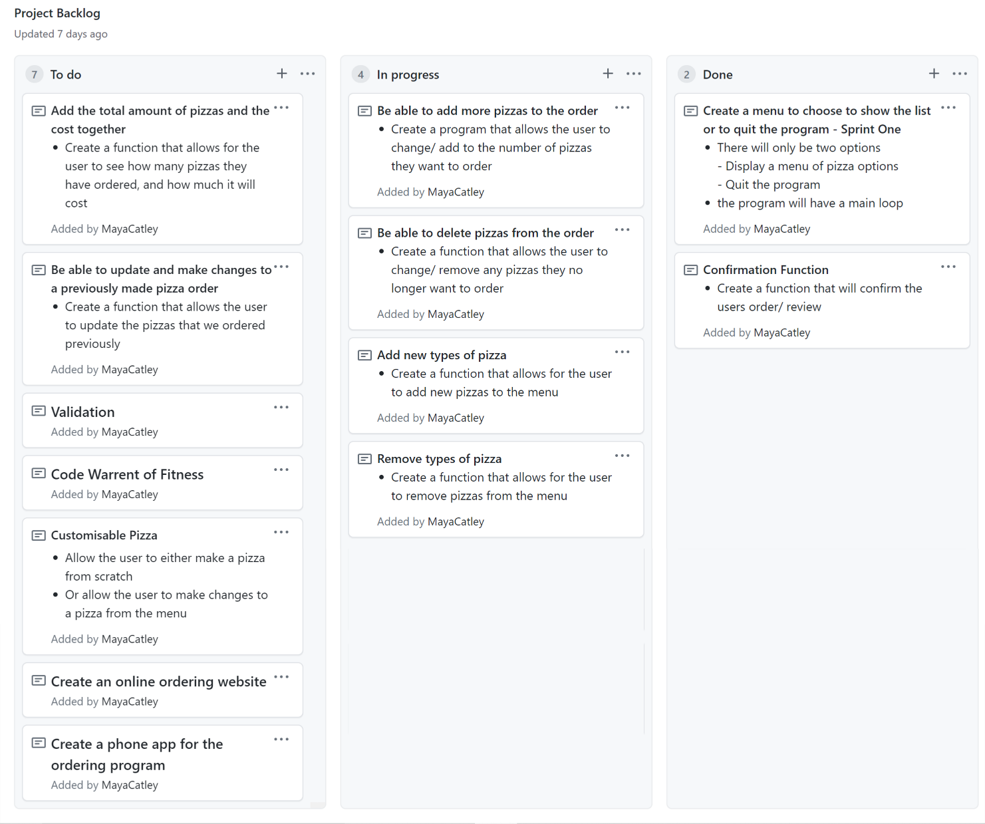

Initial Project Backlog
Sprint One
The aim of this sprint is to create a menu that allows the user to veiw the pizza list, order a pizza and allows the user to quit the program.
Rough Program Plan
Sprint One Board in progress
Basic Test of Program

Pushing to Git

Reflection
For Sprint 1 I made a program that allowed the user to view a pizza menu and then order a pizza. Sprint 1 has worked well, as it completes the important and necessary features my first version requires. In my next sprint (Sprint 2) I would like to have a way for the user to "eat the fruit", and essentially be able to take fruit away from the total, I would also like to have a delivery and pickup option, as well as a way to add fruit to the total value. The look of the program is easy to understand, due to the line formating. In later versions I will need to validate the users answers, as so far the program just producers an error message, instead of this the program should helpfuly inform the user that they have entered an invalid entry, and ask them to try and answer the question again. Later on in the program I will also need to add cost values to the different pizzas, as well as adding more pizzas to the menu so the user has more to choose from. It could be an interesting idea to add different options that the user can pick that would then add more money to their total, such as choosing extra cheese, or maybe a different type of pizza base.
Sprint Two
The aim of Sprint Two is to give the user the option to get their order delivered or the option for the user to pick it up themself. Sprint Two should also allow the user to add more pizzas to their order and to remove pizzas they no longer want.
Rough Program Plan

Sprint Two Board in progress
Basic Test of Program
Pushing to Git

Reflection
Sprint 2 has been effective in terms of picking either delivery or pick-up and then also having the option to order more pizzas and remove pizzas, for my future sprints I will need to validate these new features, as well as fixing my error messages. For Sprint Three I would also like to find a way to add costs to the users total order, have an option for the users current order to be printed, change whether or not the user wants to get their pizza delivered or if they want to collect it, and have the option to confirm their order.
I came across a few problems whilst working on this Sprint, such as finding away for the delivery and pickup option to then take the user to the pizza option list. It would continue to ask the user whether or not they wanted delivery or pickup, so I had to find a way to redirect the user to the right place and made sure the program stayed there. I also struggled with the print order function, as it wouldn't update after the user had added or removed a pizza from their order, this was because the pizza list that was printed out when the user selected the print order function was inside the loop, this meant that everytime the option list was printed out, the pizza list/ print order option would reset. And therefore would never print out the correct values. To fix this problem, I took the pizza list outside of the loop which was an easy fix.
Sprint Three
This aim of Sprint Three I would also like to find a way to add costs to the users total order, have an option for the users current order to be printed, change whether or not the user wants to get their pizza delivered or if they want to collect it, and have the option to confirm their order. I would also like to fix the formating of the program, and have it print out much more like an actual receipt would.
Rough Program Plan
Sprint Three Board in progress

Basic Test of Program

Pushing to Git

Reflection
Sprint Three works very well and I am very pleased with how the program is running, and while it took me quite a while, I am very glad I spent as much time as I did trying to make the program print out like a receipt, as I think it makes the program much cleaner and easier to use. I am also happy with the accuracy of the costs, as I have tested multipul times, and the cost is always correct. I think it worked well that I added the toppings for each pizza, as now the user can see what they are ordering, this will also make it easy for me to customise the pizzas in Sprint Four.
Many problems arose whilst making this sprint such as not having a checkout option, this means the user has to select quit for the program to stop, in the next sprint this is definetly something I would have to fix as it is a crutial option for ordering a pizza. I also need to validate the users answers, although I will probably do this after adding the customise option. I also think it could be a good idea for the user to view previous orders, so they could see the customer history.
Sprint Four
The aim of Sprint Four was to finish the printed program, so that all Sprint Five had to do was be validated. This means that Sprint Four should include the customisable pizza option and the resulting cost, view previous orders and confirm the order.
Rough Program Plan

Sprint Four Board in progress
Basic Test of Program

Pushing to Git

Reflection
Sprint Four works very well and is esentialy finished aside from validation. The new customisable pizza function works well, and the previous order option works great. The printed our program needs a little bit of refining in terms of spacing, but on the whole looks effective.
There are many things I would liked fixed in the final sprint, such as the discription after the user selects either delivery or pickup ...
'date': '2021-07-21', 'name': 'Maya', 'type': 'Delivery', 'items': [], 'phone': '0237468564', 'address': '31 Khandallah Road'
I would also like to change the message the program finishes on, as currently the program ends on "Thank you, please select from the following options menu", as the program has ended and therefore no other options menu with be printed. I will need to do a lot of validating in Sprint Five for things like the customers name, and making sure its less than 50 charcters long, also making sure the phone number is 8 digits, finding a way to validate the delivery location, and making sure that there is a helpful error message for every possible mistake the user could make.
Sprint Five
This aim of Sprint Five is to fix a few formating and error messages, and to validate as much of the program as I can, to ensure that it is as user friendly as possible..
Sprint Five Board in progress

Basic Test of Program

Pushing to Git
Reflection
Sprint Five works great, and I am very happy with how my program turned out. It runs cleanly and the validation all works well, I was able to validate the phone numbers to be the right length and format, as well as making the name and address be a certain length. With all possible user inputs that could require validation, I have also included a helpful error message that would advise the user on how they could avoid the error in the future.
Here is a video of my Dad using my program, with me telling him the options and him picking.
Sorry the sound is super bad !! I used ScreenCast Matic and it couldn't record sound better.
What my Project Backlog looks like now

Relevant Implications Summary
remember to describe and then address
Future Proofing
What is it? - Easy to update (adding new functionality and features -> new menu item and new function (function based build)), easy for another developer to work on and improve -> code commented, doc typing, program starts with main function (easy to understand how the code works).
Functionality
What is it? - Program works properly -> does not crash, everything works properly(eg. total amounts) -> regulary and systematcly tested after each sprint (role play tests, other people use)
Usability
What is it? - Is the program easy to use -> informative user feedback, communicates if the user has made an error, fixes the error on its own if it can (strip spaces, and uppercase and lowercase letter), uses a consistant user navigation system (predictability) -> can return to main menu (0 to exit). Feedback when they have completed the task
Buttons
You can apply the btn class to any element that requires a button style.